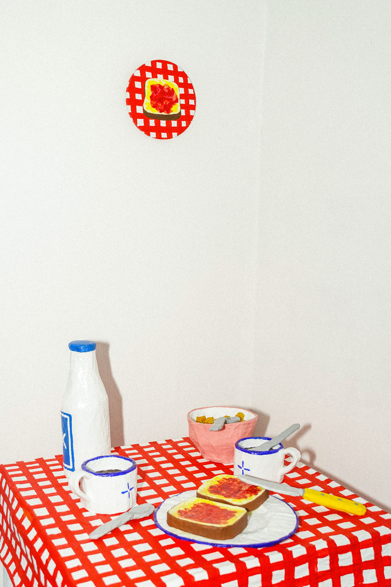
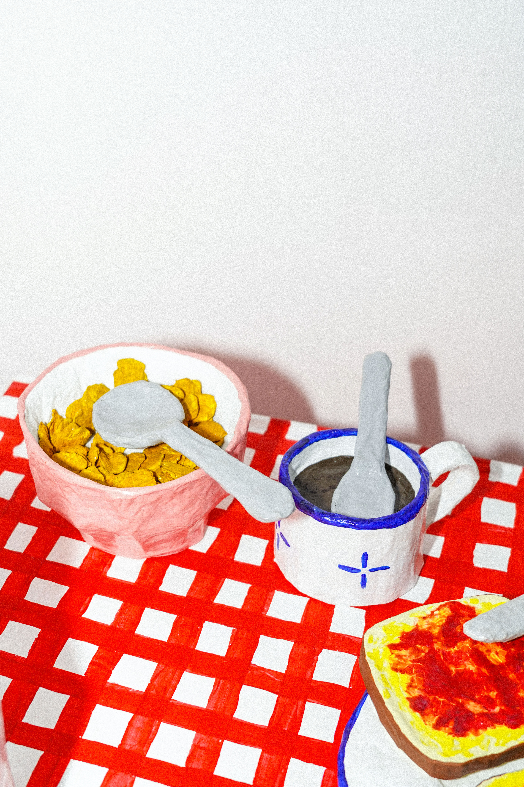

Reconstituer une table de petit déjeuner entièrement en papier mâché : la table, le café, les céréales, le lait, les tranches de pain et la confiture. Ce travail explore les rituels du quotidien, ceux que certains d'entre nous connaissent et d'autres non. J'ai voulu romantiser ce moment familier, en jouant avec cette idée de romantisation du quotidien, une tendance que l'on retrouve souvent sur les réseaux sociaux. J'ai imaginé une version idéalisée du petit déjeuner, comme celle que l'on pourrait trouver dans un livre pour enfants. Un peu floue, un peu rêveuse, quelque part entre le souvenir et l'imagination. Une esthétique qui existe dans mon esprit, mais que l'on ne retrouve jamais tout à fait dans la réalité.

